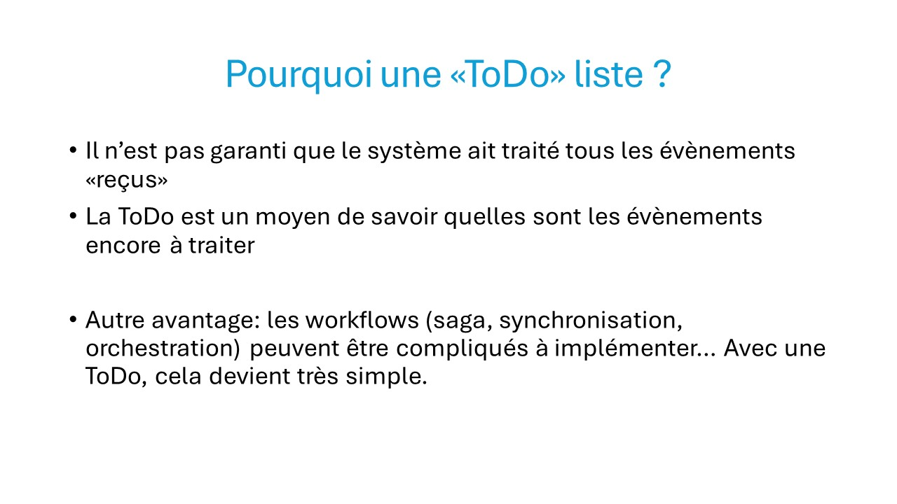

Overview
A détailler, mais voici un article très intéressant qui combine
ToDo List Pattern et Passage of Time Pattern :
ToDo List & Passage of Time Patterns Combined (event-driven.io)
Le ToDo List Pattern est simple… mais j’ai mis du temps à le comprendre et à l’appliquer. C’est pourtant un pattern très puissant : à la fois pour éviter de perdre des messages à traiter, mais aussi pour construire des workflows (sagas).
Quelques explications
